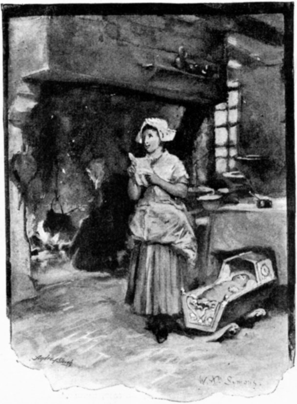
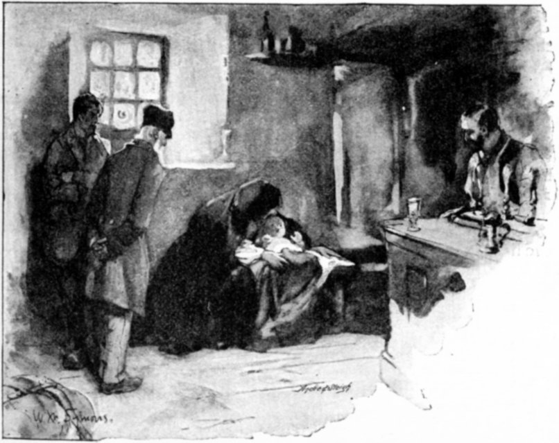
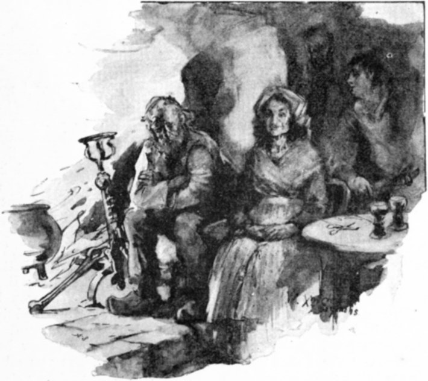
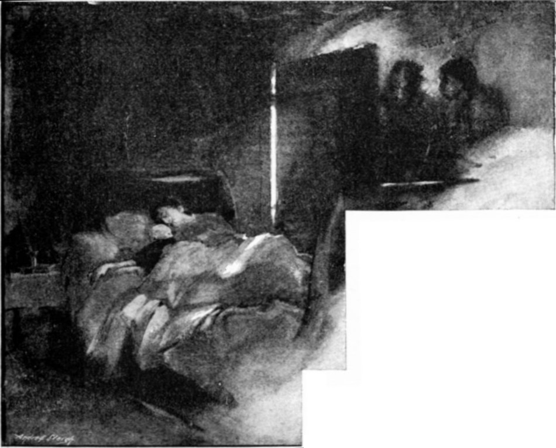
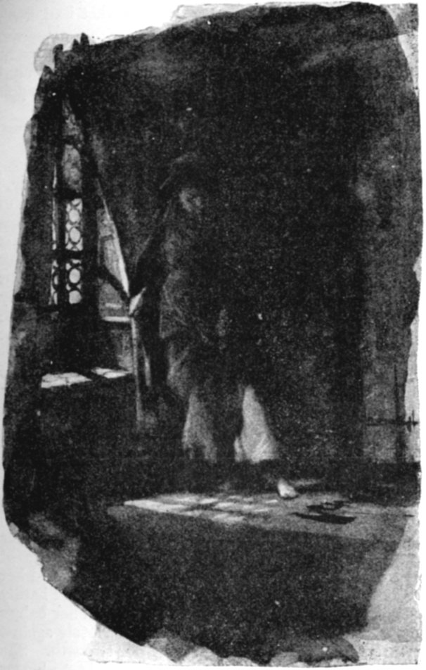
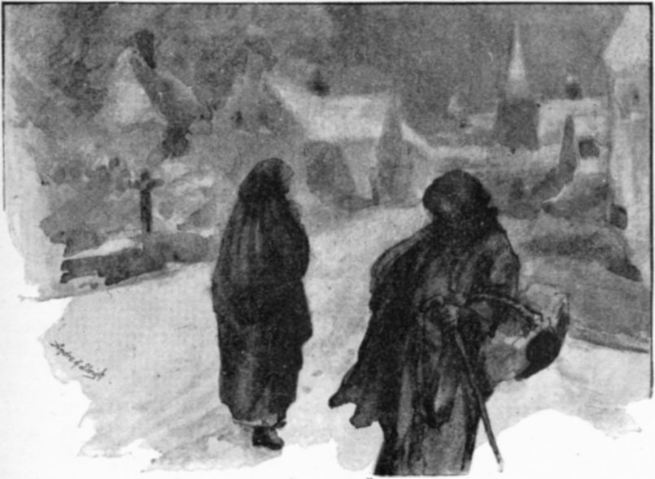
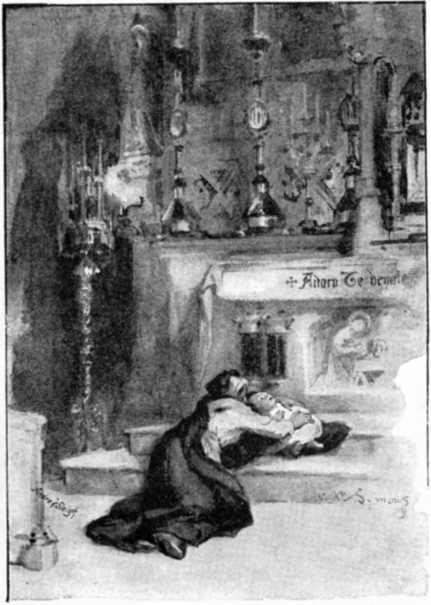

A Terrible New Year's Eve.
BY KATHLEEN HUDDLESTON.
In a little Belgian village not many miles from Brussels the winter sun shone brightly. It shone through the quaint old windows of a little, red-tiled cottage, and on the figure of a girl who stood in the centre of the kitchen reading a long, closely written letter. Over the blazing fire, where the "pot au feu" was simmering, bent an old woman, and the girl's voice came joyously to her as she stirred the savoury mess.

"MY AUNT, PAUL HAS SENT FOR ME."
{kind=link}
"My aunt, Paul has sent for me. At last he has got permanent work. It is nothing very great at present, but it may lead to better things, and the pay is enough, with what he has saved, to enable him to rent a little 'appartement.' If I can, he wants me, with our little Pierre, to catch the coach at 'Les Trois Frères' to-morrow. We should then reach Brussels by night and spend our New Year together."
As Babette spoke, her cheeks all flushed with hope and joy, the eyes of both the women rested on a cradle that stood in the room. In this, baby Pierre, only a twelvemonth old, lay sleeping peacefully.
Then said the old woman, sadly, "I shall miss you, dearest, and the baby too. Still, it is only right you should go. Perhaps in the summer you may return for a bit. Time passes quickly. A year ago you were weeping over Paul's departure; and now, behold, you are going to join him, and lay in his arms the son he has never seen."
Babette nodded. She was between tears and smiles. There was grief, true and deep, at leaving the dear old aunt, who had been so good to her and to her child. There was joy at the thought of seeing again the brave young husband whom she had wedded in the little village church two years before, and from whom the parting had been so bitter, when he left her, just before the birth of their baby boy, to seek work in the Belgian capital.
But there was no time to waste. After the simple mid-day meal there were many things to be done, and all through the short winter day they were busy. There was a bundle of warm wraps to be put together for Babette to take with her. Her little trunk, with Pierre's cradle, and some odds and ends of furniture, would follow in a few days, when her aunt had collected and packed them all. Her little store of money was counted over. Alas! it was very slender. She must travel quickly and cheaply if it was to last her till she reached Brussels.
"Jean's cart will take you as far as 'Les Trois Frères,'" said the old lady, cheerfully, after finding that counting the little heap of francs and half-francs over and over did not increase them. "That will save something. You can catch the coach that stops there at two, and by six you will be in Brussels. I pray the little one may not take cold."
Babette agreed to all her aunt suggested. Jean was a farmer of the village; well-to-do and good-natured. She knew he would gladly give her a seat in his waggon, which was going next day to "Les Trois Frères," an inn six miles from the village. The coach for Brussels stopped there twice a week, and when once she had taken her place in it, the worst of her journey would be over.
They went to rest early that night, and by eleven next morning the last good-bye had been said. Pretty Babette was seated by the side of Farmer Jean, with her baby boy, wrapped up in numerous shawls, clasped tightly to her, and the great Flemish horses were plodding, slowly but surely, towards "Les Trois Frères".
The day was not as bright as the preceding one. Snow had fallen during the night, and the sky looked heavy, as though there were more to come. Babette shivered, in spite of her long, warm cloak. The roads were freezing hard, but they managed to proceed for a mile or two, and then suddenly there came a sway and a lurch, for one of the horses had slipped and fallen on the snowy road, and the other was trying to free himself from his struggling companion by frantic kicks and plunges.
Farmer Jean had a man with him, and between them they got the poor animal up, while Babette stood in the cold highway, her baby peeping wonderingly from the folds of her cloak.
The horse was bruised and cut about the knees, but otherwise unhurt, so the men resumed their places; Babette climbed back to hers, and the heavy cart went jolting on. The farmer cracked his whip, and whenever the road grew worse he or his man got down and led the horses. In spite of this, their progress grew slower and slower.
"I don't like to say so," said the master, "but we've two more miles to go, and it is past one o'clock now. My girl, if the coach is gone, I'll get you back and drive you in again next time it passes."
But Babette would not hear of this. Not to see Paul by nightfall! Not to be clasped in his arms, she and little Pierre together, in one warm embrace! Not to spend New Year's Day with him! No! she would not think of it. And yet when, more than an hour later, they rolled into the yard of "Les Trois Frères," there was no sign of the Brussels coach. It had started half an hour before. "Les Trois Frères" was a quiet, homely inn, little used excepting when the coach stopped there. Babette, pale and trembling, got down and ran into the bar, where the landlord stood smiling behind a row of bright pewter taps.
"Am I too late for the coach?" she cried. "Has it gone?" And then, when the man told her she was indeed too late, all strength and energy left her, and she sank sobbing on the wooden bench by the door.
There were two other men in the room, who looked at her curiously; she was such a pretty girl, even in the midst of her grief. One was an old pedlar, with his well-filled pack on the floor beside him. He had a pleasant, homely face, and thin, bent figure. The other was a middle-sized, powerful fellow, clean shaven and beetle-browed, and dressed in shabby, ill-fitting garments. It was hard to tell what his rank in life might be. He stared once again at Babette, and then handed his glass to the host to be re-filled. The pedlar was the first to break the silence.

"'CHEER UP, MY LASS', HE SAID KINDLY."
{kind=link}
"Cheer up, my lass," he said, kindly; "I too have missed the coach, and I too must reach Brussels to-night. I have two thousand francs in notes and gold in my pocketbook, which are the savings of a lifetime, and I am going to pay them into the bank tomorrow. Then I shall give up my trade and start a little shop."
"I would not talk too much about them in the meantime, friend. In some countries it might be dangerous, but we are honest in Belgium."
It was the other man who spoke, and his voice, though rough, was not unpleasant. He paid the landlord, caught up his stick, and with a curt "Good-day" passed out of "Les Trois Frères."
"He, also, perhaps, is going to Brussels. He means to walk, and if he, why not I?" said the pedlar. He had come in cold and tired, and the landlord's good ale had made him slightly loquacious. "Yes, I shall try and walk. The roads are better walking than driving. It is not so very many miles, and most likely I shall be overtaken by some cart going the same way." And he rose as he spoke.
Babette rose also and caught him eagerly by the hand. "I will walk with you," she cried. "I am strong, well shod, and the fastest walker in our village. We can get to Brussels before dark, in spite of my having my boy to carry. Oh! bless you for thinking of it, for now I shall see Paul before the year is out."
Nor would she be dissuaded. Farmer Jean came in and said something about snow. "The sky was darkening for it already." But Babette was firm. The landlord's buxom wife came forth from an inner room and offered her a lodging for the night, and then, when she could not persuade her, helped her to wrap the baby up afresh, and finally made her place in her pocket a tiny flask of brandy, "in case," she said, "the snow should overtake them."
So they started. Babette had spoken the truth when she called herself a good walker. She was but twenty, and was both slight and active. The pedlar too, in spite of his bent form, got over the ground quickly. They had put four or five good miles between themselves and "Les Trois Frères" when the snow began to fall. It came down steadily in thick, heavy flakes. Babette drew her cloak yet closer round her boy and they plodded on, but walking became more and more difficult, and they grew both weary and cold. Suddenly, by the roadside, several yards ahead, they saw a man's figure. He was coming to meet them, and drew near rapidly, and then they recognised their friend in the shabby brown clothes, who had left the inn so shortly before them.
"I saw you coming," he explained, "so came to meet you. Madame"—with a bow to Babette, polite for one so uncouth looking—"can go no further to-night; the storm will not pass off yet. I live not far from here with my mother and brothers, and if madame likes, we can all take shelter under my humble roof. It is but a poor place, but you will be welcome, and doubtless we can find two spare beds."
They could do nothing but thank him and accept his offer. Even Babette acknowledged that all hope of reaching Brussels was now over. The New Year would have dawned before she and her husband met.
The wind had risen and the snow, half turned to sleet, was now beating furiously into their faces. It was all they could do to keep their feet. They struggled on after their guide as best they could, till he turned out of the high road into a lane; and thankful were they when he stopped, and, pushing open a gate that creaked on rusty hinges, led them up a narrow, gravelled pathway to a small, bare house, flanked on either side by some dreary bushes of evergreens.
In answer to his peremptory knock, the door was opened by a man slighter and shorter than himself, but sufficiently like him to be known as his brother, and the travellers staggered in—the door, with a heavy crash, blowing to behind them.
Perhaps now for the first time it really struck Babette that she had been headstrong in persisting in her journey, and in trusting herself and child to the mercy of utter strangers so far from home. The same thought passed through the old pedlar's mind, but it was too late to retreat, so they silently followed their new host and his brother. They went down a passage and into a room, half kitchen, half parlour, snugly and even comfortably furnished.

"A MAN AND A WOMAN SAT OVER THE FIRE."
{kind=link}
Heavy wooden shutters dulled the noise of the boisterous gale outside. A thick red curtain hung over the door, and a cheery log fire burnt in the stove. A man and woman sat over it; the man, a tall, repulsive-looking creature, with unkempt hair and matted beard, his age apparently about fifty. The woman looked seventy or more. She too had once been tall, but now old age gave her a withered, witch-like appearance, in spite of her great height. She was dressed in limp, faded garments, with a tattered shawl crossed over her chest, and had a scared, miserable look in her bleared old eyes. There were a few words of explanation from the man who had come home, and then, in gruff but not unkindly tones, he bade Babette be seated, and told his mother to get some supper speedily. She spread a coarse cloth on the wooden table, and when all was ready, lifted a large black saucepan from the stove and turned out a smoking, savoury-looking stew. The youngest son produced a bottle containing the thin acid wine of the country, and another of spirits. As he set them on the table, Babette noticed that across one of his hands, which were much smaller and whiter than those of his brothers, there ran a dull red scar that looked as if he had had a bad cut there. Then they all sat down, excepting the old mother, who busied herself in waiting on them.
"It's the last good meal you'll get for some time, I'm thinking," she croaked, as she watched them devouring their supper, "unless you turn to and find more work than you've done lately. The landlord called for his rent again to-day and swore he would wait no longer, but turn us out if we did not pay in three days' time."
"Curse him!" muttered the man who had brought the strangers in, half under his breath; then aloud he added, "Shut up, good mother: remember, we have visitors; and one a man of property, who will hardly sympathize with our poverty."
Babette looked up as he spoke, and intercepted a glance so strange and savage that passed between the brothers and then rested on her friend the pedlar, that involuntarily she shuddered and turned pale.
The old man, however, did not appear to notice anything unsatisfactory in the appearance or manners of his hosts. He had eaten to his liking, and had allowed the grim-looking eldest brother to fill his glass again and again with "Genievre" till his face began to flush, and his eyes grew dazed and heavy. Babette felt more and more uneasy. Oh! to be back at "Les Trois Frères" again, or even out in the snowy road! Anything would be better than sitting in this lonely house, with those three forbidding faces glaring on her. She rose hastily and caught up her sleeping child. "I am very tired, good people," she said, timidly, "and I must start betimes in the morning. If I might go to bed now, I should be so thankful."
In answer to her request, the old woman lighted a candle, and Babette followed her upstairs into a small, low chamber. There was no superfluous furniture in it, but the little bed looked clean and inviting, and the curtains that hung in front of the tiny window were made of light, fresh-looking chintz. Facing the bed was a door, leading apparently into another room. Babette wondered if it was the one her friend the pedlar was to occupy, but she was not long left in doubt. The old woman wished her good-night and left her, and Babette, after hushing her boy to sleep again, had just sunk wearily into the one chair the room boasted, when she heard a slow, heavy step ascending, and knew the pedlar was coming to bed. He shut the outer door behind him, and began arranging his pack.
Babette could hear the pedlar moving backwards and forwards with uncertain, tired footsteps. There was no sound below, even the wind was hushed. She drew aside the curtains and looked out, and saw that the snow had ceased to fall, and lay thick and white on the ground.
Then there came a sudden presentiment upon her. A sense of danger, vague and undefined, seemed to surround her. It was all the more terrible on account of its vagueness. She did not know what she feared, yet the terror of something horrible was strong upon her.
She slipped off her boots, and stole gently up to the door that divided her room from the pedlar's.
"Sir," she whispered, "you are very, very tired, and will sleep heavily. I am so anxious, I don't know why; but forgive me and do trust me. Push your pocket-book that contains your money under the door. See—it does not fit tight! We don't know who the people of the house are: they may try to rob you. I will tie it up inside my baby's shawls, and will give it back to you as soon as we are out of this place. Oh, would to God that we had never entered it! Your money will be safe with me, and they will never think of looking for it here. Will you give it me?"
In answer to her pleadings, a shabby little leather book was pushed into her room. As she picked it up and proceeded to hide it securely away beneath the baby's many wrappings, the pedlar said, in a voice rendered hoarse and indistinct by the spirits he had partaken of in such unaccustomed quantities: "Here, my dear, take it. It will, I know, be safe with you. I feel so tired that I don't think a cannon would wake me to-night once I get to sleep." He groped his way to his bed, and flung himself down on it, dressed as he was. Soon Babette heard him snoring loudly and regularly, and then she took off her clothes, and rolling her cloak around her, lay down by the side of her child.
In after years, when she looked on that awful time, she often wondered how, feeling as she did that she was surrounded by so many unknown perils, she had ever closed her eyes. Perhaps the long walk and the excitement she had undergone accounted for the profound sleep into which she fell almost immediately, and from which she was aroused in the dead of night by a noise in the next room. It was neither snore nor cry. It was more like a long, shuddering gurgle, and then—silence! Frightful, terrible silence, broken at last by the sound of stealthy footsteps and hushed voices. Babette sunk down on her pillow again, her baby clutched in her arms. A voiceless prayer went up to Heaven for the child's safety and her own, for already she heard them approaching her door, and made sure her last hour was come. Through nearly closed eyelids she watched two of the men enter; the one who had brought them to the house and his elder brother. They were muttering curses, low but deep.
"To have risked so much for nothing!" whispered one. "Can she have it, or was the old fool jesting with us?"
"It's a jest that has cost him dear," answered the other, as he watched his brother search the girl's clothes and then slip his murderous hands beneath her pillow. He withdrew them empty.
"Shall we settle her?" he asked, "or let her go? Is it not best to be on the safe side?"
But the smooth-shaven one said, decisively: "Let her alone; we have enough to answer for. See, she is sound asleep, and if not, it will be easy to find out before she reaches Brussels how much she knows. Let her be."
Babette lay like a log, stirring neither hand nor foot. In that awful moment, when her life or death was trembling in the balance, her mother love, that divine instinct implanted in every woman's breast, came to her and saved her. She knew that if she moved her baby's life was gone—her own she hardly cared about just then. But those little limbs that were nestling so soft and warm against her own, and that little flaxen head that was cuddled against her arm, for their sake she was brave.

"SHE LAY MOTIONLESS"
{kind=link}
So she lay motionless and listened, fearing that the men would hear even the quick, heavy throbs of her heart. But they did not. They searched quickly and systematically amongst all her clothing. They felt under her pillow again, but never thought of looking at the shawls of the baby who lay so peacefully by her side; and then at last they crept away and closed the door gently behind them.
The room was in utter darkness. For ages, as it seemed, Babette lay there, afraid to stir, and listening vainly for some sound; then she sat up, all white and trembling.
"My God!" she thought. "What awful thing has happened? Oh, give me strength and courage, for my baby's sake."
As an inspiration, there came to her the thought of the little bottle that the good-natured landlady of "Les Trois Frères" had given her. She felt in the pocket of her dress and drew it out, taking a long, deep draught of the fiery spirit. She had been on the verge of fainting, though she knew it not, and the brandy put new life into her. She listened for a long time and then gently—very gently—she crept out of bed and drew aside the little curtain from the window.
Perhaps a wild idea of escaping into the cold, dark night outside, aided by a sheet or blanket, flashed through her brain. If so, she soon realized that it would not be practicable. The window was not high, but it was small, and divided by thick, old-fashioned bars of iron. To get out was impossible.

"SHE STOOD CONSIDERING."
{kind=link}
As she stood considering, a thin, flickering moonbeam crept in and partially lighted up the room. It fell on to the door that led into the pedlar's chamber, and showed her something dark and slimy that was flowing slowly—slowly from under it into her room. She did not cry out or fall senseless. She bent down and put her hand into it, and saw that it was blood—her poor old friend's life-blood—for she knew now beyond all doubt that he had been murdered for the sake of his supposed wealth.
She knew she was helpless till morning. To get out of the house was impossible, for to do so she must pass down the stairs and through the room below, where probably they were either sleeping or watching. If she had courage and could only let them think she knew and suspected nothing, she might still escape. Surely they would not dare to murder her also, for they knew her husband would be expecting her next day, and would be looking for her if she did not come.
With another prayer, this time uttered shiveringly, for the soul of the pedlar, she nerved herself to get into bed again, and lay there till morning with her child against her heart; gazing with staring, sleepless eyes at the door which divided her from that awful room; keeping surely the most terrible vigil that ever woman kept.
At last the morning dawned, clear and bright. A frost had set in, and the roads were clean and hard, the sky was blue. If it had not been for that ghastly stain that had crept across the far end of her room, she might almost have thought that the events of the night had been but a fearful dream.
Her child awoke, fresh and smiling, and she could hear them stirring in the living room below. She felt that now, indeed, the hardest part of her task was still before her. On a little table by the side of her bed there was a small, cracked looking-glass. When she was dressed she looked into it and saw that it reflected a face death-like in its pallor, with burning lips and feverish eyes. She took the bottle from her pocket again and gulped down the rest of its contents. It sent a flush into her cheeks and steadied the sick trembling that was shaking her through and through.
Without stopping to think or look round again, she took up her boy and descended the stairs, and entered the room where they had supped on the previous night.
The old woman was its sole occupant now. She was bending over the fire frying something for breakfast, and the table in the centre of the room was prepared for the meal. She looked if possible more untidy and slovenly than when Babette had last seen her, and greeted the girl with a feeble smile.
Then she poured her out a cup of coffee, and Babette had sat down and begun to sip it (for she knew she must make a pretence of breakfasting) when the eldest son came in. There was a very uneasy look upon his evil-looking face.
"How are you?" he asked, sullenly, as he sat down opposite her. "I hope, rested. Did you sleep well?"
Never afterwards did she know how she found courage to answer him as she did, quietly and firmly:—
"Yes, very well, thank you. But my friend—he must have over-slept himself—why is he not down?"
The old woman dropped a plate with a clatter and turned round. The man looked Babette straight in the face as he replied, and she met his glance with one just as steady.
"The pedlar is gone," he said, as he sugared his coffee carefully. "He paid his bill and was off before seven. You will probably see him in Brussels, for he was going there."
"Yes," repeated Babette, "I shall very likely meet him in Brussels, but I don't even know his name. And I, too, good people, ought to be starting. The morning is fine, and walking will be easy." She drank down her coffee as she spoke and rose. "I cannot eat," she exclaimed, seeing that they both looked suspiciously at the thick slice of currant-bread, that lay untouched on her plate. "I think I am excited at the thought of seeing my husband again. It seems so long since we parted, and now we shall meet so soon."
In her own ears her voice sounded far away and unnatural, but they did not seem to notice anything strange in her. The old woman, with a meek "Thank you," took the humble payment she tendered, and they let her go; only the big, burly eldest son stood at the door and watched her as she went slowly down the little pathway and out through the creaking gate into the snowy road. She only looked back once, and then she saw that a dingy signboard hung in front of the house. The picture of what was meant for a cow, and had once been white, was depicted on it, and the words "A la Vache Blanche" were clumsily painted underneath. So the house was an inn, evidently, and as Babette read the words she dimly remembered having heard, long ago, that there was an inn of that name not far from Brussels. It was kept by some people named Marac, whose characters were anything but good, and who had been implicated in several robberies that had taken place some years before, although the utmost efforts of the police had failed to trace any crime directly home to them.
"Oh, heavens! Why did I not see that sign last night?" the girl thought, despairingly, as she trudged along the hard, frosty road. "It would have saved his life and perhaps my reason."
She sped along faster and faster, for the house was now quite out of sight. In the distance the way began to wind up-hill, and a stunted, leafless wood straggled along one side of the highway. Babette was just considering whether going through it would shorten her journey, when a woman, dressed in the ordinary peasant costume of the country, emerged from it and came towards her with quick, firm steps. She was tall and rather masculine looking. The black Flemish cloak she wore hung round her in straight, thick folds. She carried a market basket on one arm; a neat white cloth concealing the eggs and butter that probably lay underneath.
"Good-day," she said, in thick, guttural tones, as she reached Babette. "Are you on the way to Brussels?"
Babette made way for her to pass, somewhat shyly.
"Yes," she said, "and I am in haste; but the roads are heavy and I have my baby to carry."
As she answered, her eyes happened to fall on the stranger's right hand, which was ungloved and clasping the basket. And as she looked her heart seemed suddenly to quiver and stand still, for across that strong right hand there ran a deep red scar, precisely similar to the one she had noticed on the previous night on the hand of the youngest brother at the "Vache Blanche."
It did not take long for the whole horrible truth to flash across her. Doubtless they had felt insecure after their terrible deed, and the youngest Marac had been dispatched after her, disguised as a woman, with instructions to way-lay her by some shorter cut, in order to find out if she was really ignorant of the frightful way in which the pedlar had met his untimely end.
As these thoughts chased each other through her mind, she felt as if her great terror was slowly blanching her face, and her limbs began to tremble till she could hardly drag herself over the ground. But her baby's warm little heart, beating so closely against her own, once more gave her strength. She dropped her eyes so that she might no longer see that awful hand, and tottered on by the new-comer's side, striving to imagine that it was indeed only a harmless peasant woman who was walking by her and trying to remember that every step was bringing her nearer to Brussels and protection. Her companion glanced at her curiously, and Babette shivered, for she fancied she saw suspicion in the look.
"You seem tired." she, or rather he, said, always speaking in the same low, thick tones. "Brussels is barely two miles off, and it is yet early, but perhaps you have not rested well. Where did you sleep?"
Too well did the girl know why that question was asked her, and now that her first sickening horror was over, her brave spirit nerved itself once more.
"I was journeying with a friend yesterday," she replied, "when the snow-storm overtook us. Luckily we met a man whose home lay in our road. He was very good, and took us there and gave us supper and beds."
The stranger laughed.
"A good Samaritan, indeed! And your friend? Where is he now? Did he find his hosts so hospitable that he was unable to tear himself away?"
"No," said Babette, gently, "he started early; before I came down he was far on his road. They were very good to me, and gave me coffee before I left. I am a poor woman, and could do but little to repay them. The two francs I gave them were almost my last."
This speech, uttered in such a soft, even voice—for Babette had schooled herself well by now—seemed to satisfy her companion, and they walked on side by side in silence for what seemed to the poor girl the longest hour she had ever passed.
At last, in the far distance there rose the spires and roofs of Brussels. The chiming of church bells came gaily towards them through the frosty air, and Babette knew that her terrible journey was well-nigh ended. At the entrance of the town the stranger stopped.

"GOOD-BYE."
{kind=link}
"Good-bye," she said, curtly; "I am late for the market, and must sell my eggs quickly or shall not get my price."

"SHE SANK DOWN IN A HEAVY, DEATH-LIKE SWOON."
{kind=link}
She turned down a side street and disappeared, and Babette felt her strength and mind both failing her now that she was out of danger. She staggered weakly into a big, dim church, by the door of which the parting happened to have taken place. Here she sank down in a heavy, death-like swoon in front of one of the side altars, with her baby wailing fretfully at her breast. When she came to herself again she was seated in the sacristy, and her hair and face were wet with the water they had flung over her. By her side stood a black-robed, kindly-faced curé and two or three women, who were trying to force some wine down her throat. By degrees her strength came back, and she raised herself and asked piteously for her child. Then, when he was in her arms, she told her story.
Wonder, horror, and bewilderment all dawned in turns on her hearers' countenances, and it was not until she unpinned her baby's shawls and handed the shabby pocket-book to the priest that they were quite certain they had not to deal with some poor, wandering lunatic. But when the money had been looked at and replaced, then, indeed, they saw the necessity for prompt action. The curé caught up his hat, and, after whispering a few words to the women, hurried out of the sacristy.
"He is gone to the police," said one. "Poor child"—laying her hand caressingly on the girl's damp hair—"what hast thou not passed through! Mercifully the mass was not over, so we found thee at once. Lie still and rest. Give me but thy husband's name and address, and in one little half-hour he shall be by thy side."
And so he was, and then, when she had been examined by the chief of the police and sobbed out her story all over again, from the shelter of Paul's broad arms, she felt safe at last. She went peacefully home with her husband, and after a good night's rest in the little rooms he had taken for her, she was able to listen calmly when told next day of the capture of the whole Marac family. They had been taken red-handed in their guilt, for had not the pedlar's body been found in a disused cellar under their house?
He was brought to Brussels to be buried, but his name was never known, and his money was never claimed. Probably, as he had told Babette, he had been a friendless old man, wandering alone from place to place.
The police were generous. Half his money was given to the poor and the rest was handed to Babette, and helped to furnish her new home. A simple stone cross now marks the unknown pedlar's grave: but flowers bloom there abundantly, and though nameless, he is not forgotten. Many a prayer is uttered for him both by Babette and her children, for the memory of that terrible New Year's Eve will never fade from her mind.